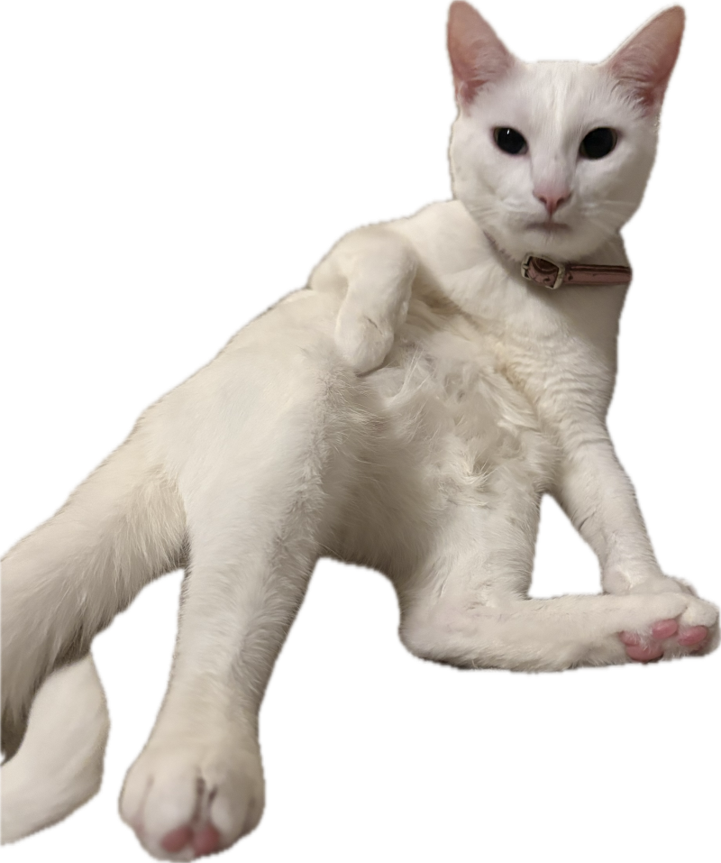

Home

About Me
Hi, I'm Sameer, a junior studying computer science with a concentration in Information Technology. I'm looking forward to learning more about frontend development.
My Coursework
Looking for my class work? Visit my ITIS3135 course site.